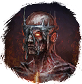

Открыть в интерактивной вики →
| Уровень | 180 |
|---|---|
| Сила (PvE) | 20 944 |
| Аспект | Velhar |
| Здоровье | 92 000 |
| Мана | 34 000 |
| Выносливость | 18 000 |
Локация
- Древний Зал
- Логово Сидраги
Дроп
 (60-110)
(60-110)  Андилунировый ингибитор
Андилунировый ингибитор  Платиновый ингибитор
Платиновый ингибитор| Предметы | Синергетики | Эпики | |||
 Эссенция Эссенция  Платиновый ингибитор Платиновый ингибитор  Андилунировый ингибитор Андилунировый ингибитор | 80-110 ур. |  |
Умения
 Поджог Поджог
Поджог Поджог Огненный Дождь Огненный Дождь — метеорит, огненный шар
Огненный Дождь Огненный Дождь — метеорит, огненный шар Инкантация Инкантация — огненная сфера, теневая аура, удар в живот, булавка в глаз, чувствительность к огню
Инкантация Инкантация — огненная сфера, теневая аура, удар в живот, булавка в глаз, чувствительность к огню